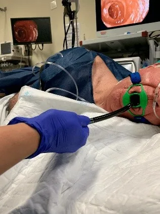

¿Qué es?
Es una prueba médica cuya finalidad es detectar las posibles enfermedades del tracto digestivo superior, es decir, del esófago, el estómago y el duodeno. Consiste en introducir desde la boca un tubo flexible (endoscopio) hasta llegar al inicio del intestino delgado. Este tubo lleva incorporada una cámara que permite transmitir en directo la visión del interior del tracto digestivo a través de una pantalla.
¿Qué ayuda a detectar?
La gastroscopia ayuda a detectar gastritis, úlceras pépticas (gástricas o duodenales), reflujo gastroesofágico y esofagitis, hernia hiatal, várices esofágicas, pólipos y tumores del esófago, estómago o duodeno, infecciones por Helicobacter pylori, hemorragias digestivas altas, así como estenosis o divertículos esofágicos.
Intervenciones de enfermería
Antes
- Verificar ayuno de al menos 6-8 horas y retirar prótesis dentales removibles.
- Explicar el procedimiento, obtener el consentimiento informado y resolver dudas del paciente.
- Verificar antecedentes de alergias, medicación anticoagulante y signos vitales basales.
Durante
- Colocar al paciente en posición de decúbito lateral izquierdo y monitorear signos vitales y saturación de oxígeno.
- Colaborar con el médico en la administración de sedación o anestesia faríngea local y en el manejo del equipo endoscópico.
- Vigilar la tolerancia del paciente al procedimiento y estar atenta a complicaciones.
Después
- Vigilar al paciente hasta su recuperación completa de la sedación.
- Verificar reflejo de deglución antes de reiniciar la vía oral, comenzando con líquidos fríos.
- Brindar indicaciones de alta y coordinar la entrega de resultados o biopsias.